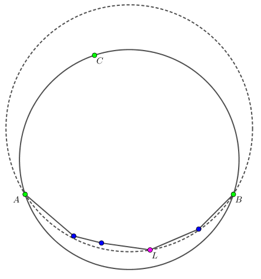

有一个长度、宽度均为 $10^5$ 的足球场，现在发生了一场 "暴乱"。
在 "暴乱" 的足球场中，一共有 $n$ 个粉丝，第 $i$ 个粉丝位于坐标 $\left( x_i, y_i \right)$ 中，且具有 "单位速度" $v_i$。这表示，他可以在 $1 \,\mathrm s$ 中移动到与之 Manhattan 距离不超过 $v_i$ 的位置。
当然，所有人不能移出足球场所在的正方形。每个人将会以几何概型等概率移动到他所能移动到的所有点之一。
Andrej 有一台圆形照相机，它可以对足球场进行拍照，具体的拍照规则如下：
首先，需要选择 $3$ 个格点，使得存在某个人可能移动到这些点 (即使概率可以是 $0$)。
同时，你还需要保证它们不共线。数据保证所有人的初始位置不共线。
然后，照相机会找到通过你所选择的 $3$ 个格点的圆，$1 \,\mathrm s$ 后，照相机会对这个圆内的区域进行拍照。
任何一个在该圆内部或圆周上的人在拍照的时刻均会被摄入相机。
你的任务是，找到三个格点，使得所拍的照片中的人数的期望尽可能的大。如果有多种选择，选择半径最大的一个，如果还有多种，任取一种均可。
第一行包含一个正整数 $n$ ($3 \leq n \leq 10^5$)，表示粉丝的数量。
接下来 $n$ 行，每行包含三个非负整数 $x_i, y_i, v_i$ ($0 \leq x_i, y_i \leq 10^5; 0 \leq v_i \leq 1000$)，依次表示第 $i$ 个人的坐标和 "单位速度"。
输出三行，每行两个整数，依次表示你所选的三个点的坐标。
先证明，存在一种策略，使得照片一定能拍齐所有的人，这样所拍的照片中的人数的期望就是 $n$，达到了理论最大值。
为说明这个结论成立，先证明一个引理：
引理：对于一个点集 $S$，一定存在 $S$ 中的三个点，使得这三个点的外接圆包含 $S$。
这尼玛还需要证明？根据套路，将其投射到三维空间，上凸包上的每个平面均满足条件。
于是，我们以每个人为中心，$\sqrt 2 \cdot v_i$ 为边长做正方形 (对角线平行于坐标轴)，而这一些正方形的凸包可以等价为一个点集的凸包 —— 因为一般情况下，一个正方形对应 $4$ 个整点；在特殊情况下 (接近边界)，通过合理的求交，可以将其对应到 $5 \sim 8$ 个整点。
因此，只需要对这个凸包应用引理，可知存在三个点，外接圆覆盖凸包，从而一定能拍到所有的人。
接下来就是解决半径最大的问题了。
回到二维，可以得到一个显然的性质：这样的三个点一定都在它们的二维凸包上 (不考虑退化的情形)。因此，我们现在只需要讨论原来的二维凸包。
下面说明，这样的圆一定是凸包上某三个点的外接圆 (不考虑退化的情形)。
如果不成立，则一定圆上一定存在一条劣弧 $\overset{\frown} {A B}$，包含其它的点。
我们考虑劣弧上的所有点，使得圆的半径最大，设使得半径最大的点是 $L$ (等价地，寻找 $L$ 使得角 $\angle ALB$ 最大)。
容易证明，$\odot ALB$ 也包含整个凸包，且半径比原来的圆大，矛盾。
整个过程如下图所示：
于是，我们只需要枚举凸包上的连续三个点，找到半径最大的，就是我们所求的答案。正确性也是没问题的，因为存在覆盖整个凸包的 (三点) 外接圆。
关于求三点外接圆的半径，可以用三角形面积公式的变形：$S = \dfrac {a b c} {4 R} \Rightarrow R = \dfrac {a b c} {4 S}$。总时间复杂度 $O \left( n \log n \right)$。
#include <bits/stdc++.h>
#define cross(x, y, z) (((y) - (x)) ^ ((z) - (x)))
#define I(x, y) p[cnt++] = vec2(x, y)
typedef long long ll;
const int N = 800054, MAX = 100000;
struct vec2 {
int x, y;
vec2 (int x0 = 0, int y0 = 0) : x(x0), y(y0) {}
vec2 * read() {scanf("%d%d", &x, &y); return this;}
inline vec2 operator - (const vec2 &B) const {return vec2(x - B.x, y - B.y);}
inline ll operator ^ (const vec2 &B) const {return (ll)x * B.y - (ll)y * B.x;}
inline ll norm2() const {return (ll)x * x + (ll)y * y;}
inline bool operator < (const vec2 &B) const {return x < B.x || (x == B.x && y < B.y);}
};
inline int min(const int x, const int y) {return x < y ? x : y;}
inline int max(const int x, const int y) {return x < y ? y : x;}
int graham(int n, vec2 *p, vec2 *dest) {
int i; vec2 *ret = dest;
std::iter_swap(p, std::min_element(p, p + n));
std::sort(p + 1, p + n, [p] (const vec2 A, const vec2 B) {ll r = cross(*p, A, B); return r > 0 || (r == 0 && (A - *p).norm2() < (B - *p).norm2());});
for (i = 0; i < n; *ret++ = p[i++])
for (; ret > dest + 1 && cross(ret[-2], p[i], ret[-1]) >= 0; --ret);
return *ret = *p, ret - dest;
}
inline long double Radius2(const vec2 A, const vec2 B, const vec2 C) {
ll S = 2 * cross(A, B, C);
return S ? ((long double)(A - B).norm2() * (B - C).norm2() * (C - A).norm2()) / ((long double)S * S) : -INFINITY;
}
int n, CH, cnt = 0;
vec2 p[N], ch[N];
int main() {
int i, x, y, v, d; long double best = 0., cur;
scanf("%d", &n);
for (i = 0; i < n; ++i) {
scanf("%d%d%d", &x, &y, &v);
x >= v ? I(x - v, y) : (d = v - x, I(0, max(0, y - d)), I(0, min(MAX, y + d)));
y >= v ? I(x, y - v) : (d = v - y, I(max(0, x - d), 0), I(min(MAX, x + d), 0));
x <= MAX - v ? I(x + v, y) : (d = x + v - MAX, I(MAX, max(0, y - d)), I(MAX, min(MAX, y + d)));
y <= MAX - v ? I(x, y + v) : (d = y + v - MAX, I(max(0, x - d), MAX), I(min(MAX, x + d), MAX));
}
CH = graham(cnt, p, ch), assert(CH >= 3);
std::copy(ch, ch + 3, ch + CH);
for (d = -1, i = 0; i < CH; ++i)
if ((cur = Radius2(ch[i], ch[i + 1], ch[i + 2])) > best)
d = i, best = cur;
assert(~d);
printf("%d %d\n%d %d\n%d %d\n", ch[d].x, ch[d].y, ch[d + 1].x, ch[d + 1].y, ch[d + 2].x, ch[d + 2].y);
return 0;
}
坑1：注意对足球场边界的考虑，不要输出在大正方形外的点。
坑2：由于这道题都是整点，因此可以考虑直接用整数计算，不过要考虑溢出的问题。